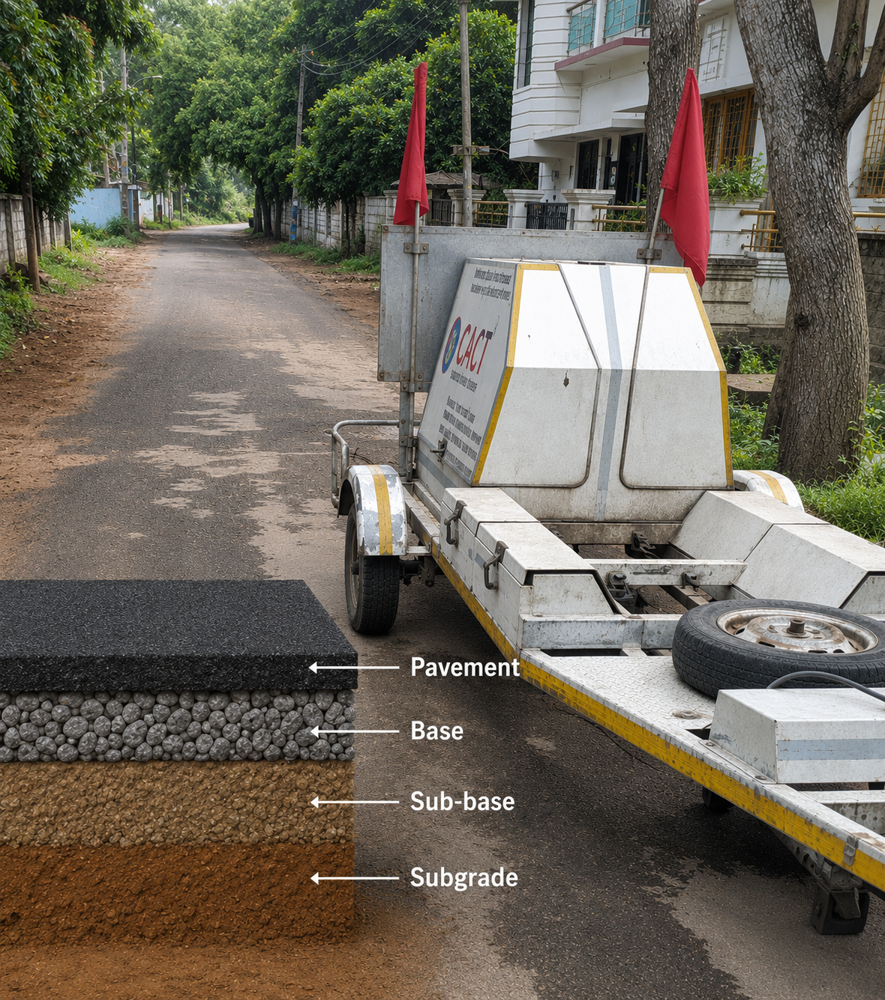

AI

AI Based Services
Intelligent Automated Analysis
Harness the power of Artificial Intelligence to analyze road surface conditions, automate reporting, and detect pavement distress with precision.
Crack Detection
Auto Reporting
Distress Scoring